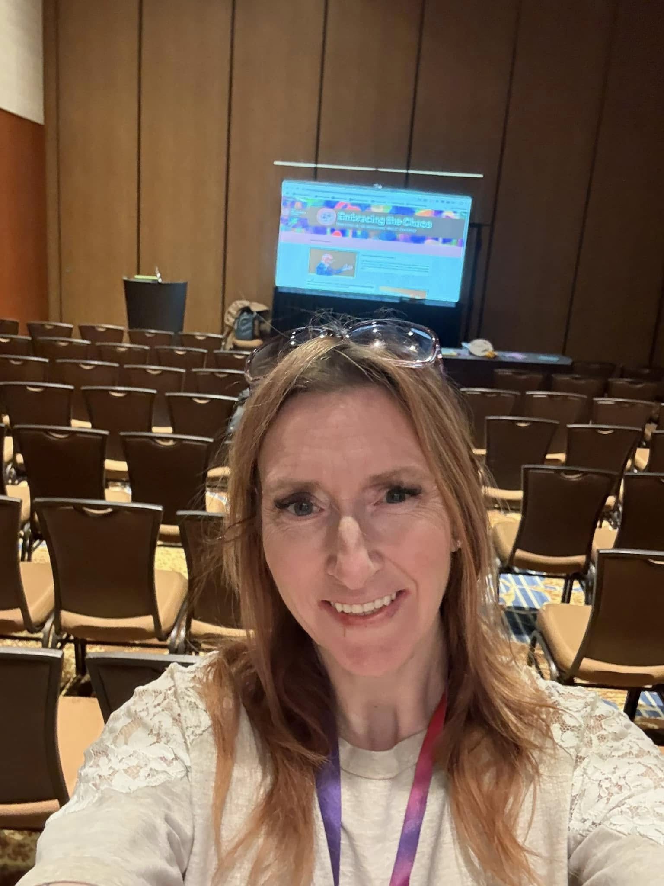

Professional Learning · Speaking · Beginner Band Support
Professional Learning & Speaking
Bring neuro-affirming music education support to your next event.
From a real-life neurospicy educator who understands the joy, complexity, and beautiful chaos of making music work for everyone in the room.

Meet Sarah
Practical, honest, neuro-affirming professional learning.
Sarah Batchelor is a Canadian music educator, speaker, mentor, and creator of Neurospicy Music Teacher. With 25 years of experience teaching music, band, and K–12 classrooms, Sarah brings a practical, honest, and neuro-affirming voice to professional learning.
Her sessions are grounded in real classroom experience, lived experience as an educator with autism and ADHD, and a deep belief that music education should work for everyone in the room — including the teacher.
Sarah’s goal is to be the teacher, mentor, and advocate she needed when she was growing up: someone who validates neurodivergent experiences, makes space for different ways of thinking, and helps educators build classrooms where every brain belongs.
Speaking Experience
Presented At
Alberta Music Conference
2023
Palliser District Teachers’ Convention Association
2025 · 2026
Greater Edmonton Teachers’ Convention Association
2026
South Western Alberta Teachers’ Convention Association
2026
North Central Teachers’ Convention Association
2026
Alberta Music Educators Summit
Upcoming · Fall 2026
Available for Booking
Professional Learning Sessions
Sessions can be adapted for conference breakouts, professional learning days, school divisions, music educators, smaller group workshops, or longer mentorship-style learning.
Embracing the Chaos
Neurodivergent Educators, Support, and Sustainability
A practical and personal session exploring neurodiversity in education, the hidden costs of masking and “coping,” and what it can look like for neurodivergent educators to move from surviving to thriving.
Click for more ✨
Embracing the Chaos
Neurodivergent Educators, Support, and Sustainability
A practical and personal session exploring neurodiversity in education, the hidden costs of masking and “coping,” and what it can look like for neurodivergent educators to move from surviving to thriving.
This session invites educators and school communities to think more deeply about how schools support neurodivergent staff. Grounded in lived experience, research, and real classroom practice, Sarah explores what neurodiversity is, how it can show up in educators, and why “but you’re managing” is not the same as meaningful support.
Participants will reflect on the strengths and challenges of neurodivergent thinking, the hidden labour of masking, and practical strategies that can make teaching more sustainable.
Best suited for
Teachers, school leaders, music educators, convention sessions, inclusion-focused professional learning, and staff wellness conversations.
Key topics
Neurodiversity, masking, burnout, coping vs. thriving, educator sustainability, sensory needs, routines, organization, creativity, support networks, and school culture.
Failure First
Growth Mindset Approaches to Beginner Band
A practical beginner band session about helping students build confidence, resilience, and independence by normalizing mistakes, celebrating progress, and creating systems that help young musicians succeed from the very beginning.
Click for more ✨
Failure First
Growth Mindset Approaches to Beginner Band
A practical beginner band session about helping students build confidence, resilience, and independence by normalizing mistakes, celebrating progress, and creating systems that help young musicians succeed from the very beginning.
Beginner band is messy, loud, exciting, and full of opportunities to make mistakes. In this session, Sarah shares practical strategies for helping students understand that “bad sounds” are not failure — they are part of learning.
Failure First explores how music teachers can intentionally create classrooms where students take chances, make mistakes, problem-solve, and grow. The session looks at what happens before students get instruments in their hands, how to support instrument selection, how to communicate with families, and how to build systems that help students become more resilient and self-reliant.
Best suited for
Beginner band teachers, elementary and junior high music teachers, new band teachers, music education conferences, professional learning days, and teachers rebuilding or rethinking their beginner band programs.
Key topics
Growth mindset, beginner band setup, instrument selection, first sounds, resilience, student independence, parent communication, band binders, tracking progress, PBIS, and supporting students with additional needs.
From Squeaks to Symphonies
Setting Beginner Band Students Up for Success
A practical beginner band session about building the structures, routines, and early experiences that help students move from first sounds and squeaks toward confidence, independence, and long-term success.
Click for more ✨
From Squeaks to Symphonies
Setting Beginner Band Students Up for Success
A practical beginner band session about building the structures, routines, and early experiences that help students move from first sounds and squeaks toward confidence, independence, and long-term success.
The first weeks of beginner band can feel loud, chaotic, and more than a little unhinged — shiny new instruments, big feelings, and sounds no one warned you about. But with intentional structures in place, those early squeaks become the starting point for confident, capable young musicians.
Participants will explore ways to slow the start, reduce overwhelm, normalize the learning curve, and remove unnecessary barriers so students can make progress, take risks, and stay engaged in band.
Best suited for
Beginner band teachers, elementary and junior high music teachers, new band teachers, music education conferences, professional learning days, and teachers wanting stronger systems for the first weeks and months of band.
Key topics
Beginner band setup, first sounds, instrument selection, instrument petting zoo, Squeak and Squawk events, percussion placement, student fit, practice routines, resilience, cognitive load, self-efficacy, progress tracking, and classroom systems.
Fix the Barriers, Fix the Behaviors
Accessible Music Classrooms, Student Needs, and Practical Supports
A practical session about reducing challenging behaviours in music and band classes by identifying the access barriers underneath them — including reading overload, executive functioning demands, sensory overwhelm, anxiety, and fear of failure.
Click for more ✨
Fix the Barriers, Fix the Behaviors
Accessible Music Classrooms, Student Needs, and Practical Supports
A practical session about reducing challenging behaviours in music and band classes by identifying the access barriers underneath them — including reading overload, executive functioning demands, sensory overwhelm, anxiety, and fear of failure.
Sometimes it’s not the kid — it’s the system.
This session explores the idea that many “behaviours” we see in music classrooms are not defiance, laziness, or lack of care. They are often the result of students running into barriers they do not yet have the tools to navigate.
This is a “there is no way we can cover all of this in one hour, but we are absolutely going to try” kind of session. It can stand alone as a high-impact overview, or it can be expanded into multiple deeper sessions.
Best suited for
Music educators, band teachers, elementary music teachers, inclusive education teams, school leaders, convention sessions, professional learning days, and teachers working with complex classrooms.
Key topics
Access barriers, behaviour as communication, modified notation, learning sheets, executive functioning, predictable routines, sensory needs, anxiety, student independence, Universal Design for Learning, cognitive load, and classroom systems.
This session is currently offered as a high-impact overview and can also be expanded into a longer workshop or multi-session professional learning series.
Email Sarah About This SessionBring Sarah to Your Event
Looking for practical, affirming professional learning?
Sessions can be adapted for music educators, school divisions, convention audiences, professional learning days, and smaller mentorship-style workshops.
Email Sarah About Speaking